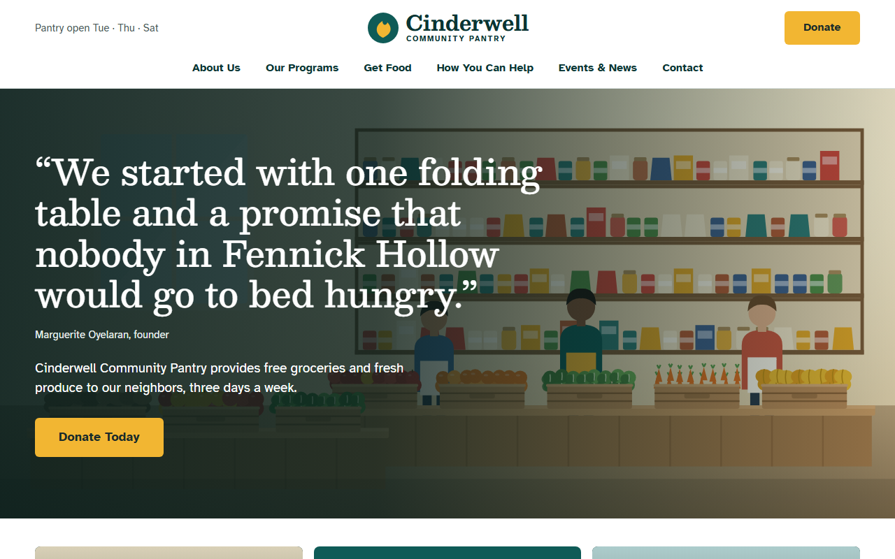
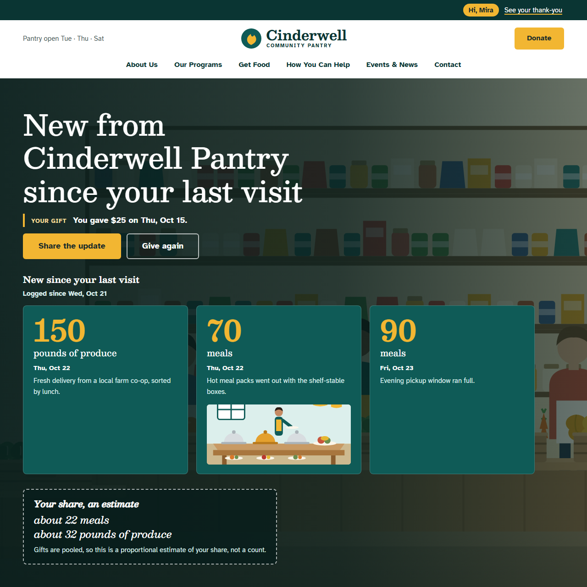
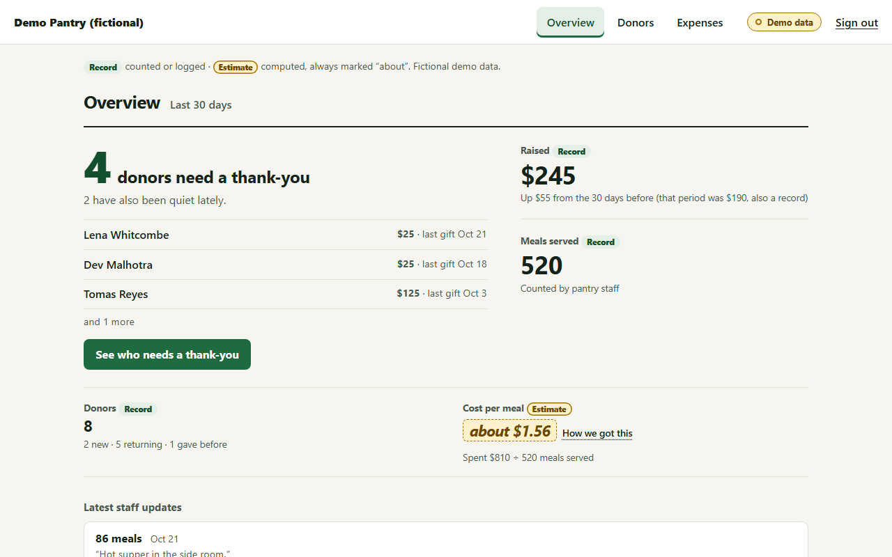

Cinderwell Community Pantry
A community pantry. The pantry wrote its own donor version of each section, with a different version for different kinds of visit.
Open Cinderwell/sites/cinderwell/
For small food pantries without fundraising staff. A donor who returns from an email link sees your page rearranged around what their gift did.


150 lb, logged about 22 meals, an estimateOnline shops greet you with what you bought last time. Chartitable gives a small pantry the same memory for its donors. Same address, same page. Only the sections that matter are redrawn around the person who gave.
![The same Cinderwell page for a returning donor named Mira. A top bar says "Hi, Mira" with a link to see her thank-you. The headline reads "New from Cinderwell Pantry since your last visit", with "You gave $25 on Thu, Oct 15" and Share the update and Give again buttons. Below are three logged tiles: 150 pounds of produce, 70 meals and 90 meals. A dashed box reads "Your share, an estimate: about 22 meals, about 32 pounds of produce" and says gifts are pooled, so it is a proportional estimate, not a count.](img/cinderwell-donor.png) 150 lb, logged
about 22 meals, an estimate
150 lb, logged
about 22 meals, an estimate
Rearranged around the donor. A new headline, their $25 gift and one next step. No banner stuck on top.
Logged records. Three tiles from the pantry's own log, each with its date.
A labeled estimate. It says "about" and explains it is a share, not a count.
Both run the same one-line embed and keep their own layout, colors and voice. Open one as yourself and you see the plain site, like any first-time visitor.
A community pantry. The pantry wrote its own donor version of each section, with a different version for different kinds of visit.
Open Cinderwell/sites/cinderwell/
A regional food bank with a different layout and look, running the same embed.
Open Brindlecote/sites/brindlecote/
To see the donor view, open a donor from the presenter panel at /staff/demo.
Paste the script tag into your page. Then mark the sections a donor's version can replace. Everything else on your page is never touched.
Staff write what happened, in a sentence. A photo is optional. That line becomes a logged record.
A donor who opens the link in their email sees your page redrawn around their gift. Anyone else sees your page exactly as it was.
<script src="https://chartitable.vercel.app/layer.js" data-charity="demo-pantry-a" defer></script><!-- strangers see this, unchanged -->
<section data-impact-region="hero">…your normal hero…</section>
<template data-impact-for="hero">…the donor version…</template>The charity id above belongs to the Cinderwell demo. Your own pantry gets its own.
Gifts are pooled, so each donor is credited a proportional share. Every computed number says "about" and wears the ring. The dot and the ring differ in shape, so you can tell them apart without color.
Logged: 80 meals served, Oct 20
Counted by the pantry. A record.
About 16 meals: your share of pooled gifts, an estimate
Worked out, not counted. Never shown as a record.
These two lines are this section's own example. They are not read off the screenshots above.
Your gift fed 120 families!
Rejected: not in the logThank you for your gift. The pantry served 80 meals on Oct 20.
Your gift fed 120 families!
The plain template sentence, built only from the log.
With no check, the invented number reaches the donor. This switch exists only on this page.
What the donor readsExample sentences. The 120 is made up on purpose; it is not in the log.
If the data is thin, we say less. Nothing logged yet means one short line with no numbers, such as "Thank you for your gift." A shorter page, not a smoother claim.
Who gave. What was spent. What it did. Who needs a thank-you. Names are never ranked or labeled; the page says "Quiet lately", not "At risk".
Open the dashboardDemo data. Every name and number is fictional.
